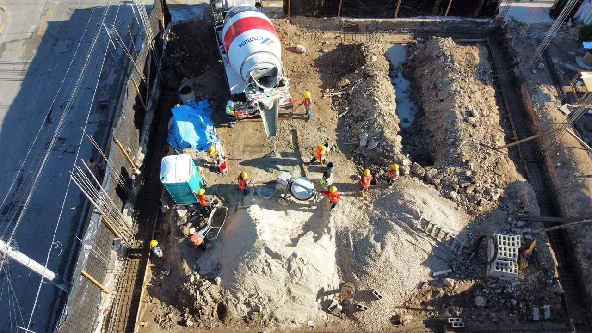

Erdarbeiten und Baufeldvorbereitung auf Kalkstein und Sascab
Jedes Projekt hier beginnt auf demselben Boden: dünner Oberboden, harter Kalkstein, Sascab-Linsen und manchmal Höhlen. Ein richtig gebautes Plateau entscheidet, ob Böden reißen, Pools lecken und Straßen absacken. Wir übernehmen Rodung, Abtrag, Felsaushub, verdichtete Auffüllungen, Bauplateaus und Höhen und untersuchen und behandeln Hohlräume, bevor darauf gebaut wird.

Ein Projekt von Recrea Construction
Preise 2026: Rodung und Oberbodenabtrag $18–$45 MXN/m²; Aushub in Boden oder Sascab $120–$250 MXN/m³; Felsaushub im Kalkstein mit Hydraulikhammer $280–$650 MXN/m³; verdichtete Sascab-Auffüllung in 20-cm-Lagen auf 95 % Proctor $320–$520 MXN/m³ inkl. Material; Abfuhr $90–$180 MXN/m³. Forstgenehmigungen und Sprengungen, wo erlaubt, separat.
Was wir tun
Rodung und Abtrag
Entfernen von Dschungel und Oberboden, Erhalt markierter Bäume und Häckseln der Vegetation vor Ort.
Felsaushub
Hydraulikhämmer und Felsfräsen für Fundamente, Pools, Zisternen, Leitungsgräben und Keller.
Auffüllungen und Plateaus
Sascab und Schotter in kontrollierten Lagen, verdichtet und laborgeprüft, für Gebäude und Straßen.
Hohlraumerkundung
Sondierungen und Geophysik, wo Karsthohlräume vermutet werden, danach Verfüllung oder Überbrückungsplatte.
Höhen und Abfluss
Planierung, die Regen von Gebäuden weg zu geplanten Versickerungspunkten führt.
Abfuhr und Entsorgung
Abtransport zu genehmigten Deponien und Wiederverwendung von Felsaushub als Auffüllung, wenn er geeignet ist.
Karst: warum die Baufeldvorbereitung hier wichtiger ist
Die Halbinsel Yucatán ist eine Kalksteinplatte, die das Wasser zu Spalten, Höhlen und Cenoten gelöst hat. Die meisten Grundstücke sind tragfähig, doch ein verborgener Hohlraum unter einem Fundament oder einer Straße kann Jahre später Setzungen verursachen. Wo Geologie oder Erfahrungen der Nachbarn darauf hindeuten, sondieren wir mit dem Bohrgerät, setzen Bodenradar oder Geophysik ein und behandeln Funde mit Beton, Steinschüttung oder einer vom Statiker bemessenen Überbrückungsplatte. Auf jedem Grundstück wird das Plateau in verdichteten und geprüften Lagen gebaut, nicht nur abgekippt und planiert.
Genehmigungen und Umweltauflagen
Dschungelrodung auf Forstland erfordert eine Nutzungsänderungsgenehmigung (CUSTF) der SEMARNAT und oft eine Umweltverträglichkeitsprüfung.
Kommunale Lizenzen für Erdarbeiten und den Bau selbst, dazu lokale Regeln für geschützte Bäume.
Aushub und Bauschutt müssen mit Nachweis zu genehmigten Deponien.
Cenoten und Höhlen auf oder nahe dem Grundstück unterliegen zusätzlichem Schutz und Abständen, die wir früh benennen.
2026 kosten Rodung und Oberbodenabtrag etwa $18–$45 MXN/m² je nach Bewuchs und Zugang. Auf Forstland ist vor jeder Rodung eine Nutzungsänderungsgenehmigung der SEMARNAT nötig.
Aushub im Kalkstein mit Hydraulikhammer kostet $280–$650 MXN/m³, zwei- bis viermal so viel wie im Boden. Deshalb vermessen wir früh: Einen Pool oder eine Zisterne ein paar Meter zu verschieben, kann viel Fels sparen.
Sascab ist das lokale weiße Kalkmaterial, das auf der ganzen Halbinsel abgebaut wird. Richtig abgestuft, befeuchtet und lagenweise verdichtet ergibt es eine ausgezeichnete Auffüllung und Straßentragschicht, viel günstiger als angeliefertes Material.
Ja, mit Sondierbohrungen und geophysikalischen Methoden wie Bodenradar. Keine Methode ist perfekt, deshalb konzentrieren wir die Erkundung dort, wo die Lasten liegen: Fundamente, Pools und Straßen.
Angebot für Erdarbeiten
Rodung, Fels, Auffüllungen und Plateaus, Lage für Lage geprüft. Antwort in 2 Minuten.